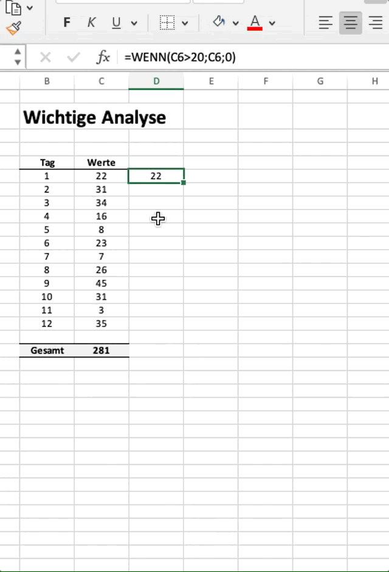

NumPy: der Zahlenakrobat
Inhalt
NumPy: der Zahlenakrobat¶
Numpy ist eines der wichtigsten Module in Python und ein Grund für das rasante Wachstum der Programmiersprache. Es ermöglicht schnelle Berechnungen mit Vektoren und Matrizen in kompakter Form. Für viele von Ihnen mag sich dies zunächst eher abschreckend denn überzeugend anhören - schließlich beschäftigen wir uns nicht mit linearer Algebra.
Auch wenn dies auf den ersten Blick nicht ersichtlich erscheint, so gibt es doch wesentliche Argumente dafür numpy zu verstehen.
Zum einen gibt es tatsächlich sehr viele Anwendungsfälle in denen wir mit Vektoren und Matrizen rechnen müssen (oder wollen). Jede Tabelle mit Daten kann als Matrix angesehen werden. Wir können uns z.B. jede Spalte in Excel als Vektor vorstellen und jedes Tabellenblatt als Matrix. Für den Fall das Vektor oder Matrix mit Zahlen1 befüllt sind, ist numpy das ideale Werkzeug.
Zum anderen basiseren nahezu alle Module, die im Rahmen der Datenanalyse benötigt werden “unter der Motorhaube” auf numpy. D.h. auch wenn der Nutzer von Modulen dies nicht direkt sieht, so basieren die Fähigkeiten dieser anderen Module im Hintergrund auf numpy; inbesondere auch das von uns im Rahmen der Datenanalyse genutzte Modul pandas.
Wir werden in diesem Kapitel deshalb numpy vorstellen. Da die Bibliothek jedoch sehr groß und umfangreich ist, werden wir nur einige wichtige Konzepte und Funktionen kurz vorstellen. Im Laufe der Zeit und inbesondere wenn Sie beginnen eigene Probleme mit Python lösen zu wollen, wird ihre Nachfrage nach weiteren Details zu numpy steigen. Sie werden recherchieren und neue, bessere Wege finden, um Dinge zu implementieren. Wir glauben, dass dieser “learning on the job”-Ansatz besser geeignet ist, als ihnen abstrakt den vollem Umfang des Moduls in diesem Kapitel vorzustellen.
Einführendes Beispiel¶
Lassen Sie uns mit einem anschaulichen Beispiel beginnen, um die Vorteile der Bibliothek vorzustellen.
Nehmen wir an, das Unternehmen Super Sales GmbH hätte folgende Transaktionsdaten zu ihren täglichen Verkäufen:

Gegeben ist die Kunden-ID, der Preis des Produktes und die verkaufte Produktmenge. Wir möchten nun (i) den Umsatz je Kunde sowie (ii) den gesamten Tagesumsatz berechnen. In Excel ist dies sehr einfach möglich, in dem wir eine neue Spalte Umsatz erstellen, in der wir die Spalte Preis mit der Spalte Menge multiplizieren (Umsatz je Kunde). Von dieser neuen Spalte können wir dann die Summe nehmen (Tagesumsatz).
Unsere Tabelle sieht dann wiefolgt aus:

Stellen wir uns nun vor, wir wollen dieselbe Berechnung in Python durchführen. Wir könnten diese Berechnung mit “pure” Python umsetzen.
# Daten
preis = [10, 20, 30, 10, 5]
menge = [3, 5, 7, 1, 9]
# Berchnungen
umsatz = [p*m for p, m in zip(preis, menge)]
umsatz
[30, 100, 210, 10, 45]
umsatz_gesamt = sum(umsatz)
umsatz_gesamt
395
Schaut man sich die Umsetzung im Detail an, dann stellen wir fest, dass wir quasi diesselbe Vorgehensweise durchgeführt haben, wie in Excel. Der Unterschied ist die Umsetzung:
Excel: wir ziehen eine Formel runter (E5 zu E10)
Python: wir schreiben eine For-Schleife
Der bis hierhin gewählte Ansatz in Python ist relativ umständlich und - obgleich dies für unsere Zwecke aktuell noch nicht so relevant ist - auch relativ ineffizient und langsam, d.h. die Berechnung dauert in Python relativ lange.2
Genau hier kommt ein Vorteil von NumPy in Spiel. Beispiel in Numpy:
import numpy as np
preis = np.array([10, 20, 30, 10, 5])
menge = np.array([3, 5, 7, 1, 9])
umsatz = preis * menge
umsatz
array([ 30, 100, 210, 10, 45])
umsatz_gesamt = np.sum(umsatz)
umsatz_gesamt
395
Da Numpy für den Umgang mit Vektoren und Matrizen geschrieben wurde, ist die Umsetzung oft sehr viel einfacher und deutlich schneller. Auch liest sich der Code in unserem Beispiel einfacher, da wir tatsächlich preis \(\times\) menge schreiben können und nicht den Umweg über eine For-Schleife nehmen müssen.
Diese Operation ist für den Datentyp list nicht definiert, wie wir an der Fehlermeldung sehen können.
preis = [1,2,3]
menge = [4,5,6]
preis * menge
---------------------------------------------------------------------------
TypeError Traceback (most recent call last)
/var/folders/cj/9s881x057_12d_qyp3jcmb380000gn/T/ipykernel_38275/1620228902.py in <module>
1 preis = [1,2,3]
2 menge = [4,5,6]
----> 3 preis * menge
TypeError: can't multiply sequence by non-int of type 'list'
In Numpy können wir jedoch den Datentyp array definieren, für welchen die o.g. Operation mathematisch interpretiert wird und die einzelnen Elemente der jeweiligen Vektoren addiert werden. Ein wesentlicher Vorteil ist also, dass ich mit Numpy-Arrays - anders als z.B. mit Listen - mathematische Operationen viel besser und kompakter umsetzen kann.
Grundlagen¶
Im Folgenden stellen wir wesentliche Grundlagen des Moduls vor.
Importieren des Moduls¶
Wir importieren die Bibliothek typischerweise mit folgender Zeile:
import numpy as np
Wie bereits im vorherigen Kapitel dargestellt, gäbe es weitere Wege die Bibliothek oder auch nur selektive Funktionen zu importieren. Mit Bezug auf numpy ist es jedoch anerkannter Standard, die Bibliothek zu importieren und dann die Kurzschreibweise np zu wählen. Es ist deshalb zu empfehlen, diese Konvention ebenfalls zu befolgen.
Wir können die Zeile
import numpy as np
lesen als “importiere das Modul numpy und bezeichne dieses im Folgenden als np”.
Arrays¶
Kern des Moduls sind die sog. arrays, da dieser Datentyp viel “Fähigkeiten” hat, die wir im Rahmen unserer Datenanalyse brauchen.
Wir definieren arrays immer mit dem Befehl
>>> np.array()
Wir können damit Vektoren und Matrizen (und auch mehrdimensionale Tensoren) erzeugen.
Oft erzeugen alleine die Begriffe Vektor und Matrix Panik und suggerieren, dass wir es mit komplexen mathematischen Objekten zu tun haben.
Schauen wir uns zunächst die drei geläufigsten Beispiele
Spaltenvektor
Zeilenvektor
Matrix (zweidimensional)
in Excel an:

Abstrahieren wir von den mathematischen Begriffen, dann sehen wir, dass es sich um “Datenstrukturen” handelt, die wir auch in der angewandten Praxis sehr häufig benötigen.
Wir können diese Strukturen in numpy sehr einfach erzeugen.
spalten_vektor = np.array([1,2,3,4])
spalten_vektor
array([1, 2, 3, 4])
zeilen_vektor = np.array([[1,2,3,4]]) # Vorsicht: [[]]!
zeilen_vektor
(array([[1, 2, 3, 4]]), numpy.ndarray)
matrix = np.array([[1,2,3,4], [5,6,7,8], [9, 10, 11, 12]])
matrix
array([[ 1, 2, 3, 4],
[ 5, 6, 7, 8],
[ 9, 10, 11, 12]])
Allen drei Strukturen ist gemeinsam, dass diese einfache Listen (oder Listen von Listen) nehmen und in arrays umwandeln. Wir erkennen das daran, dass wir in np.arrays() z.B. [1,2,3,4] hineinschreiben, was eine Liste ist. Noch offensichtlicher wird dies, wenn wir uns folgenden Code anschauen:
liste = [1, 2, 3, 4]
vektor = np.array(liste)
vektor
array([1, 2, 3, 4])
liste = [1, 2, 3, 4]
matrix = np.array([liste, liste, liste, liste])
matrix
array([[1, 2, 3, 4],
[1, 2, 3, 4],
[1, 2, 3, 4],
[1, 2, 3, 4]])
liste = [1,2,3,4]
np.array(liste)
array([1, 2, 3, 4])
Rechnen mit Arrays¶
Wie in unserem Eingangsbeispiel gezeigt, ist ein wesentlicher Vorteil von Numpy, dass wir mit Arrays sehr viel besser mathematische Operationen durchführen können. Schauen wir uns ein paar wesentliche Beispiele an.
daten1 = np.array([1,2,3,4])
daten2 = np.array([5,6,7,8])
daten1 - daten2
array([-4, -4, -4, -4])
daten1 + daten2
array([ 6, 8, 10, 12])
daten1 * daten2
array([ 5, 12, 21, 32])
daten1 / daten2
array([0.2 , 0.33333333, 0.42857143, 0.5 ])
daten1**daten2 # Vorsicht! daten1^daten2!
array([ 1, 64, 2187, 65536])
Wir sehen, dass mathematische Operatoren, wie +, - oder auch *, elementweise auf die einzelnen Elemente angewandt werden. Dies funktioniert jedoch nur, wenn die Arrays die gleiche Dimension (“Größe”) haben.
Folgender Code produziert einen Fehler, da beide Arrays unterschiedliche Größen haben.
daten3 = np.array([2,3])
daten1 * daten3
---------------------------------------------------------------------------
ValueError Traceback (most recent call last)
/var/folders/cj/9s881x057_12d_qyp3jcmb380000gn/T/ipykernel_75657/4208416013.py in <module>
1 daten3 = np.array([2,3])
----> 2 daten1 * daten3
ValueError: operands could not be broadcast together with shapes (4,) (2,)
Die etwas kryptische Fehlermeldung sagt, dass die Dimensionen nicht zusammen passen und die mathematische Operation deshalb nicht erlaubt ist. Wir können die Größe bzw. die Dimensionen eines Arrays einfach bestimmen, in dem wir die Methode .shape nutzen.
daten1.shape, daten3.shape
((4,), (2,))
Es gibt jedoch eine Ausnahme, für die bei unterschiedlichen Dimensionen die oben aufgeführten Operationen erlaubt sind: wenn es sich nur um eine Zahl handelt.
Hier zwei Beispiele
daten1 + 4
array([5, 6, 7, 8])
daten1 + np.array([4])
array([5, 6, 7, 8])
Für diesen Fall genierte Numpy automatisch einen identisch großen Array für die einzelne Zahl, d.h. tatsächlich wird für den o.g. Fall folgende Berechnung im Hintergrund durchgeführt (Hinweis: dies nennt sich Broadcasting):
daten1 + np.array([4, 4, 4, 4])
array([5, 6, 7, 8])
Insgesamt hat die Nutzung von Arrays einen großen Vorteil. Erinnern wir uns an unsere Berechnung des Kapitalwertes und führen die optimierte Berechnung nun mithilfe von numpy durch.
Zur Erinnerung unsere Berechnung in “pure Python”:
i = 0.04
cashflows = np.array([-10000, 5000, 4000, 3000])
KW = sum([cf/(1+i)**t for t, cf in enumerate(cashflows)])
KW
1172.9062357760577
In Numpy können wir die Berechnung ohne For-Loop berechnen. Wir müssen dafür lediglich gleichgroße Arrays für unsere benötigten Werte definieren. Für den Fall, dass es sich um nur eine Zahl handelt, können wir darauf verzichten. Wir können den Zinssatz also als einzelne Zahl definieren.
Wir definieren also:
cashflow: ist vorgegeben aus den Annahmen, wir müssen nur aus der Liste einen Array erzeugen via
np.arrayZeit: der erste Cashflow wird mit 0 potenziert, der zweite mit 1, der dritte mit 2 und der vierte mit 3. Wir benötigen also einen Array
np.array([0,1,2,3,4])Zins: dies ist eine Konstante und damit ein einzelner Wert. Hier müssen wir keine Änderung vornehmen
Rechnen wir den Kapitalwert für den Base-Case via Numpy aus:
# Annahmen im Base Case
t = np.array([0, 1, 2, 3])
sum(cashflows/(1+i)**t)
1172.9062357760577
Wir erhalten den identischen Wert, wie in unser vorherigen Version. Der Code liest sich insgesamt auch sehr viel ähnlicher als die mathematische Formel dahinter:
Jedoch ist der oben abgebildete Code sehr fehleranfällig bzw. nicht sehr flexibel. Hintergrund ist, dass wir t quasi händisch mit dem jeweils korrekten Zeit-Index befüllt haben. Dies hat zur Konsequenz, dass wir in unseren Code manuell eingreifen müssen, sobald sich die Anzahl an Cashflows ändert. Wir können dies jedoch mit der Funktion np.arange (Hinweis: die NumPy-Variante der Funktion range, die wir im Kapitel Funktionen kennengelernt haben) optimieren.
n = len(cashflows)
t = np.arange(n)
t
array([0, 1, 2, 3])
sum(cashflows/(1+i)**t)
1172.9062357760577
Wir nutzen hier außerdem die Funktion sum. Wir können auch hier noch optimieren, indem wir die Numpy-Version, np.sum, wählen. Der Code in Numpy würde dann insgesamt wiefolgt aussehen:
# Annahmen im Base Case
i = 0.04
cashflows = np.array([-10000, 5000, 4000, 3000])
n = len(cashflows)
t = np.arange(n)
np.sum(cashflows/(1+i)**t)
1172.9062357760577
Das obige Beispiel zeigt, dass wir mit Hilfe von Numpy komplexe Berechnungen durchführen können, ohne auf For-Loops zurückgreifen zu müssen. Dies macht den Code nicht nur schneller, sonder oft auch sehr viel lesbarer.
Natürlich können wir die oben aufgeführte Operation dann auch wieder - wie bisher empfohlen - in eine eigene Funktion “auslagern”.
def calc_kw(cashflows, zins):
t = np.arange(len(cashflows))
kw = np.sum(cashflows/(1+i)**t)
return kw
calc_kw(cashflows, i)
1172.9062357760577
Indexieren von Arrays¶
Wir können auf einzelne (oder mehrere) Elemente von Arrays zugreifen und Arrays beliebig “zerschneiden”.
Die Syntax dafür ist wiefolgt:
<array>[<slice>, <slice>]
Jedem <slice> können Werte für start, stop und step angegeben werden. Standardmäßig sind diese mit dem Wert 0 belegt.
Da ein Index in Python immer mit 0 beginnt, ist dies für viele zunächst verwirrend. Jedoch gewöhnt man sich recht schnell an diese Logik.
Hier ein paar Beispiele:
Einzelne Elemente¶
vektor = np.array([1,2,3,4,5,6,7,8,9,10])
vektor
array([ 1, 2, 3, 4, 5, 6, 7, 8, 9, 10])
vektor[1]
2
Dies ist eine Kurzschreibweise für start=1, step=1 und stop=0. Zu beachten ist hier, dass auf das erste Element - wie überall in Python - mit dem Index 0 zugegriffen wird.
matrix = np.array([vektor, vektor * 2, vektor * 4])
matrix
array([[ 1, 2, 3, 4, 5, 6, 7, 8, 9, 10],
[ 2, 4, 6, 8, 10, 12, 14, 16, 18, 20],
[ 4, 8, 12, 16, 20, 24, 28, 32, 36, 40]])
matrix[1,2]
6
Bei einer Matrix (2-D) wird mit dem ersten Index die Zeile angesprochen und mit dem zweiten Index die Spalte. Im oberen Beispiel wählen wir also die Zeile mit Index 1 (d.h. die zweite Zeile) und die Spalte mit Index 2 (d.h. die dritte Spalte).
Mehrere Elemente¶
Über die Veränderung der Werte für stop und step können wir auf mehrere Elemente zugreifen.
Hier ein paar Beispiele:
vektor[0::2] # Starte bei Index 0 und gib jeden zweiten Werte wieder
array([1, 3, 5, 7, 9])
vektor[:4] # Ersten vier Elemente
array([1, 2, 3, 4])
vektor[2:5] # Starte bei Index 2 und Ende bei 5. Element
array([3, 4, 5])
vektor[-1] # Letztes Element
10
vektor[-2:] # Letzten beiden Elemente
array([ 9, 10])
matrix[:2,1] # Ersten beiden Zeilen, zweite Spalte
array([2, 4])
matrix[1:3,2:4] # Zeile mit Index 1 und 2, Spalten mit Index 2 und 3
array([[ 6, 8],
[12, 16]])
Verbinden von Arrays¶
Wir können mithilfe von zwei Funktionen Arrays zusammenfügen bzw. verbinden. Dies machen wir mit den Funktionen
np.vstackundnp.hstack
das “v” in vstack steht hier für vertical und das “h” dementsprechend für horizontal.
Hier ein paar Beispiele, wie wir Vektoren und Matrizen miteinander verknüpfen.
zahlen1 = np.array([1,2,3,4])
zahlen1
array([1, 2, 3, 4])
zahlen2 = np.array([3,4,5,6])
zahlen2
array([3, 4, 5, 6])
np.vstack((zahlen1, zahlen2))
array([[1, 2, 3, 4],
[3, 4, 5, 6]])
np.hstack((zahlen1, zahlen2))
array([1, 2, 3, 4, 3, 4, 5, 6])
Wichtig ist, dass die zu verknüpfenden Dimensionen zueinander passen. So wird z.B. folgender Code eine Fehlermeldung auswerfen, weil wir es mit zwei Vektoren unterschiedlicher Größe zu tun haben, die auf Zeilenebene miteinander verbunden werden sollen.
zahlen3 = np.array([1,2,3])
zahlen3
array([1, 2, 3])
np.vstack((zahlen1, zahlen3))
---------------------------------------------------------------------------
ValueError Traceback (most recent call last)
/var/folders/cj/9s881x057_12d_qyp3jcmb380000gn/T/ipykernel_38275/2481459214.py in <module>
----> 1 np.vstack((zahlen1, zahlen3))
<__array_function__ internals> in vstack(*args, **kwargs)
~/opt/anaconda3/envs/coding4class/lib/python3.9/site-packages/numpy/core/shape_base.py in vstack(tup)
281 if not isinstance(arrs, list):
282 arrs = [arrs]
--> 283 return _nx.concatenate(arrs, 0)
284
285
<__array_function__ internals> in concatenate(*args, **kwargs)
ValueError: all the input array dimensions for the concatenation axis must match exactly, but along dimension 1, the array at index 0 has size 4 and the array at index 1 has size 3
Eine Verbindung via np.hstack ist hingegen kein Problem, da hier Spalten “hinzugefügt” werden.
np.hstack((zahlen1, zahlen3))
array([1, 2, 3, 4, 1, 2, 3])
Für Matrizen ist das Vorgehen beim Verbinden identisch.
matrix1 = np.array([zahlen1, zahlen2])
matrix1
array([[1, 2, 3, 4],
[3, 4, 5, 6]])
matrix2 = np.array(matrix1/12)
matrix2
array([[0.08333333, 0.16666667, 0.25 , 0.33333333],
[0.25 , 0.33333333, 0.41666667, 0.5 ]])
np.vstack((matrix1, matrix2))
array([[1. , 2. , 3. , 4. ],
[3. , 4. , 5. , 6. ],
[0.08333333, 0.16666667, 0.25 , 0.33333333],
[0.25 , 0.33333333, 0.41666667, 0.5 ]])
np.hstack((matrix1, matrix2))
array([[1. , 2. , 3. , 4. , 0.08333333,
0.16666667, 0.25 , 0.33333333],
[3. , 4. , 5. , 6. , 0.25 ,
0.33333333, 0.41666667, 0.5 ]])
Vergleiche und Bedingungen¶
Schauen wir uns an, wie wir Arrays nutzen können, um häufig benötigte Transformationen von Daten zu nutzen.
Stellen wir uns vor, wir hätten einen Datensatz mit Absatzmengen in den letzten 10 Tagen. Nun wollen wir z.B. feststellen,
Tage an denen nichts abgesetzt wurde
Tage an denen der Absatz über 300 lag
…
Wir können dies mit Numpy ganz einfach über logische Bedingungen bzw. Komparatoren abbilden. D.h. wir benötigen auch keine For-Loops
# Annahme Absatzmengen
sales_data = np.array([100, 20, 307, 10, 40, 0, 120, 12,368, 0])
sales_data == 0
array([False, False, False, False, False, True, False, False, False,
True])
Wenn wir wissen wollen, wieviele Tage es mit einem Absatz von “0” gab, können wir wiefolgt vorgehen:
sum(sales_data == 0) # oder auch np.sum
2
sales_data > 300
array([False, False, True, False, False, False, False, False, True,
False])
Numpy gibt uns einen Array mit dem Datentyp boolean für jedes Element zurück. Wir können dieses Ergebnis auch nutzen, um Elemente in einem Array auszuwählen.
Beispiel: wir wollen für die Tage mit einem Absatz von mehr als 300 die genauen Absätze erfahren
mask = sales_data > 300
sales_data[mask]
array([307, 368])
Wie bereits im Kapitel über Entscheidungsstrukturen gelernt, können wir auch mehrere Bedingungen verknüpfen.
Wollen wir also z.B. die Tage herausfiltern an denen ein Absatz zwischen 20 und 300 gemacht wurde, dann können wir wiefolgt vorgehen:
mask = (sales_data > 20) & (sales_data < 300)
sales_data[mask]
array([100, 40, 120])
Die Syntax ist hier jedoch etwas anders:
or=|and=&
Außerdem sollten die Bedingungen jeweils in geschweiften Klammern () abgegrenzt werden.
Wir können darüber hinaus auch negieren, d.h. das Gegenteil der Bedingung abfragen. Dies machen wir mit ~.
Beispiel: das Gegenteil von “zwischen 20 und 300” ist “kleiner gleich 20 oder größer gleich 300”. Dies können wir entweder explizit so formulieren oder die oben formulierte Bedingung ins Gegenteil umkehren, d.h. negieren.
# Explizite neue Bedingung formuliert
mask2 = (sales_data <= 20) | (sales_data >= 300)
sales_data[mask2]
array([ 20, 307, 10, 0, 12, 368, 0])
# Oben formulierte Bedingung negiert
sales_data[~mask]
array([ 20, 307, 10, 0, 12, 368, 0])
Wichtige Funktionen¶
Numpy ermöglicht es in kompakter Form und sehr effizient Berechnungen durchzuführen. Dies ist insbesondere dann der Fall, wenn wir neben den vorgestellten Arrays auch die speziel von Numpy bereitgestellten Funktionen nutzen. Dies verhindert oft unnötige For-Loops und macht den Code isngesamt einfacher.
Im Folgenden sollen einige Funktionen vorgestellt werden, die wir im Rahmen einer Datenanalyse häufig benötigen (könnten).
np.sum: wir können mit dieser Funktion summieren. Ein großer Vorteil ist, dass wir damit auch Matrizen nach bestimmten Dimensionen (über Zeilen oder Spalten) summieren können. Wir geben die Dimension mit axis an.
matrix
array([[ 1, 2, 3, 4, 5, 6, 7, 8, 9, 10],
[ 2, 4, 6, 8, 10, 12, 14, 16, 18, 20],
[ 4, 8, 12, 16, 20, 24, 28, 32, 36, 40]])
# Bilde Summe über gesamte Matrix
np.sum(matrix)
385
# Bilde Summe über jede Spalte
np.sum(matrix, axis=0)
array([ 7, 14, 21, 28, 35, 42, 49, 56, 63, 70])
# Bilde Summe über jede Zeile
np.sum(matrix, axis=1)
array([ 55, 110, 220])
Die Funktion .sum steht dafür exemplarisch für weitere Funktionen
np.count: zählt Anzahl der Elementnp.mean: berechnet arithmetisches Mittelnp.median: berechnet Median (d.h. Wert der genau in der Mitte steht, so dass 50% der Werte ober- bzw. unterhalb liegen)np.std: berechnet Standardabweichungnp.var: berechnet Varianz…
np.arange: die Funktion ist das Numpy-Äquivalent von range und erstellt einen Numpy-Array der bei einem Wert startet und endet und mit einem definierten Zählschritt verändert wird.
np.arange(10) # starte bei 0, ende bei 10, zähle um 1 hoch
array([0, 1, 2, 3, 4, 5, 6, 7, 8, 9])
np.arange(3,13,3) # starte bei 3, ende beim 13. Element, zähle um 3 hoch
array([ 3, 6, 9, 12])
np.linspace: die Funktion ist ähnlich zu np.arange - jedoch für Dezimalzahlen. Die Funktion erstellt eine Art Zahlenstrahl mit Zahlen, die im gleichen Abstand zueinander stehen.
Wir definieren einen Start- und einen Stopwert sowie die Anzahl an Werte (num), die wir haben wollen. Die Funktion gibt dann einen Array von num gleichmäßig verteilte Zahlen im Intervall [Startwert; Stopwert] zurück.
# 30 gleichmäßig verteilte Werte zwischen 0 und 1
zahlen = np.linspace(0,1,num=30)
zahlen
array([0. , 0.03448276, 0.06896552, 0.10344828, 0.13793103,
0.17241379, 0.20689655, 0.24137931, 0.27586207, 0.31034483,
0.34482759, 0.37931034, 0.4137931 , 0.44827586, 0.48275862,
0.51724138, 0.55172414, 0.5862069 , 0.62068966, 0.65517241,
0.68965517, 0.72413793, 0.75862069, 0.79310345, 0.82758621,
0.86206897, 0.89655172, 0.93103448, 0.96551724, 1. ])
# 100.000 gleichmäßig verteilte Werte zwischen 10 und 100
zahlen = np.linspace(10, 100, num=100_000)
zahlen
array([ 10. , 10.00090001, 10.00180002, ..., 99.99819998,
99.99909999, 100. ])
zahlen.shape
(100000,)
np.where: beim Coden - und insbesondere auch in der Datenanalyse - müssen wir häufig eine “wenn-dann”-Logik ausführen. Wir haben diese bereits im Rahmen der If-Statements kennengelernt. Mit der Funktion np.where können wir eine solche Logik durchführen, ohne explizit For-Loops zu nutzen.
Lassen Sie uns zunächst ein kleines Beispiel in Excel vorstellen, in welchem wir eine “wenn-dann”-Logik in typischer Excel-Manier anwenden. Im vorliegenden Fall haben wir eine Spalte mit Werten, für welche wir auch die Summe gebildet haben. Nun wollen wir eine neue Spalte erzeugen, in der wir jedoch nur Werte > 20 übernehmen und auch von dieser neuen Spalte die Summe bilden.

Im obigen Beispiel wollen wir die Summe aller Werte ermitteln, die > 20 sind. In Excel machen wir das z.B. mit einer einfachen wenn-Funktion. Wir ziehen diese dann von oben nach unten, was in Python das Äquivalent einer For-Loop ist.
Schauen wir uns nun an, wie wir dies in Python via Numpy und np.where umsetzen können. Die Funktion funktioniert dabei grundsätzlich nach folgender Logik:
np.where(<Bedingung>, <werte, wenn wahr>, <werte, wenn falsch>)
werte = np.array([22, 31, 34, 16, 8, 23, 7, 26, 45, 31, 3, 35])
werte
array([22, 31, 34, 16, 8, 23, 7, 26, 45, 31, 3, 35])
np.where(werte > 20, werte, 0)
array([22, 31, 34, 0, 0, 23, 0, 26, 45, 31, 0, 35])
sum(np.where(werte > 20, werte, 0))
247
Wir können in Numpy mit unserem bisher gewonnen Wissen die oben dargestellt Exceltabelle relativ einfach nachbilden:
tage = np.arange(len(werte))
lg20 = np.where(werte > 20, werte, 0)
table = np.vstack((tage, werte, lg20))
table
array([[ 0, 1, 2, 3, 4, 5, 6, 7, 8, 9, 10, 11],
[22, 31, 34, 16, 8, 23, 7, 26, 45, 31, 3, 35],
[22, 31, 34, 0, 0, 23, 0, 26, 45, 31, 0, 35]])
Die Summe über die beiden Zeilen “Werte” und “>20”, können wir via np.sum und der richtigen Indexierung erreichen.
np.sum(table[1:], axis=1)
array([281, 247])
Wir könnten diesen auch einmal drehen, um die Darstellung vergleichbar zu Excel zu haben. Dies machen wir mit dem Zusatz T (steht für transponieren).
table.T
array([[ 0, 22, 22],
[ 1, 31, 31],
[ 2, 34, 34],
[ 3, 16, 0],
[ 4, 8, 0],
[ 5, 23, 23],
[ 6, 7, 0],
[ 7, 26, 26],
[ 8, 45, 45],
[ 9, 31, 31],
[10, 3, 0],
[11, 35, 35]])
np.repeat und np.tile: die beiden Funktionen ermöglichen es uns einen beliebigen Array zu vervielfachen und in einen neuen Array zu speichern.
np.repeat: vervielfacht jedes Element
np.tile: vervielfacht den Array
Beispiel:
# Vervierfacht (4x) jedes Element
arr = np.array([1,2,3])
np.repeat(arr, 4)
array([1, 1, 1, 1, 2, 2, 2, 2, 3, 3, 3, 3])
# Vervierfacht (4x) den Array
np.tile(arr, 4)
array([1, 2, 3, 1, 2, 3, 1, 2, 3, 1, 2, 3])
Zwei Anwendungsfälle, die im Rahmen der Datenanalyse häufig vorkommen sind die Erzeugung von Vektoren oder mit Matrizen, die nur mit “0” oder “1” befüllt sind. Für diese beiden Spezialfälle gibt es spezielle Funktionen: np.ones und np.zeros
np.ones(10)
array([1., 1., 1., 1., 1., 1., 1., 1., 1., 1.])
np.zeros((4,2))
array([[0., 0.],
[0., 0.],
[0., 0.],
[0., 0.]])
np.unique: Gibt die eindeutigen/einzigartigen Werte innerhalb eines Arrays bestimmen und zählen.
zahlen = np.array([1,2,3,2,6,1,2,3,3,8])
print(zahlen.shape)
np.unique(zahlen)
(10,)
array([1, 2, 3, 6, 8])
Die Funktion gibt im obigen Beispiel an, dass der Array zahlen mit insgesamt 10 Elementen fünf einzigartige Elemente hat; nämlich: 1, 2, 3, 6 und 8. Oft möchten wir auch wissen, wieviel von jedem einzigartigen Element im ursprünglichen Array gefunden wurden. Dies können wir mit dem Zusatz return_counts herausfinden.
einzigartig, anzahl = np.unique(zahlen, return_counts=True)
einzigartig, anzahl
(array([1, 2, 3, 6, 8]), array([2, 3, 3, 1, 1]))
Die Funktion gibt in diesem Falle zwei Werte zurück. Der erste Rückgabewert - welchen wir unter dem Variablennamen einzigartig speichern - gibt uns wie vorher die einzigartigen Werte des Arrays zurück. Der zweite Rückgabewert (anzahl) gibt an, wie häufig der jeweils einzigartige Wert im Array auftritt. Zum Beispiel ist die 2 insgesamt 3x zu finden, die 8 nur 1x.
Zufallszahlen¶
Im Rahmen der Datenanalyse benötigen wir häufig zufällige Zahlen. Auch wenn dies zunächst paradox klingen mag - schließlich haben wir es doch idealerweise mit realen Datensätzen zu tun - , gibt es dafür zwei wesentliche Argumente. Wir benötigen Zufallszahlen insbesondere dann, wenn wir
exemplarische Daten- oder Datensätze erzeugen wollen (wie wir bereits viele genutzt haben)
Simulationen durchspielen wollen
Ersteres haben wir in diesem und in den vorherigen Kapiteln bereits mehrfach gemacht. Für jedes Beispiel, welches wir erstellt haben, wurden Daten benötigt. Diese haben wir (in diesem Fall der Autor…) manuell eingegeben. Es ist wesentlich einfacher diese Daten zufällig zu erzeugen; insbesondere auch für größere Datensätze.
Desweiteren können wir mit Zufallszahlen sehr komplexe Probleme und Aufgaben lösen, für die wir ggf. keine mathematische Lösung kennen. Wir nennen dies dann Simulation, d.h. wir simulieren das Problem vielfach und schauen, was die Lösung im Mittel ergab.
Zufallszahlen werden in Numpy mit dem Sub-Modul random erzeugt3. Wir rufen dieses auf, in dem wir np.random eingeben. Drei wichtige - und für unsere Zwecke zunächst ausreichende Funktionen - sind dann:
.randn: erzeugt normalverteilte Zufallszahlen.randint: erzeugt ganzahlige Zufallszahlen in einem gewünschten Intervall.uniform: erzeugt uniformverteilte Zufallszahl (d.h. zwischen 0 und 1).choice: zieht zufällig aus einer zu definierenden Liste an Zahlen
# Erzeugt n normalverteilte Zufallszahlen
n = 10
rnd = np.random.randn(n)
rnd
array([-0.03299381, -0.00490324, -0.82473103, 1.50233334, -0.5143545 ,
-0.41377807, -0.072067 , -1.05044847, 0.28679283, -0.33237114])
# Erzeugt n Zahlen zufällig aus dem Intevall 0 bis 10
np.random.randint(low=0, high=10, size=n)
array([8, 3, 4, 3, 2, 2, 4, 1, 1, 6])
np.random.uniform(size=10)
array([0.70090251, 0.19572165, 0.58155832, 0.52276633, 0.99147696,
0.3655943 , 0.67413799, 0.6984989 , 0.14722086, 0.29982857])
# Erzeugt n Elemente aus der vorgegebenen Liste an Werten (können Zahlen oder Texte sein)
np.random.choice(["rot", "gelb", "grün"], n)
array(['gelb', 'rot', 'gelb', 'grün', 'grün', 'gelb', 'grün', 'rot',
'gelb', 'rot', 'gelb', 'gelb', 'rot', 'rot', 'gelb', 'rot', 'gelb',
'gelb', 'gelb', 'grün', 'gelb', 'gelb', 'grün', 'grün', 'gelb',
'gelb', 'rot', 'grün', 'gelb', 'gelb'], dtype='<U4')
Im Falle von .choice können die Wahrscheinlichkeiten auch explizit hinterlegt werden:
np.random.choice(["rot", "gelb", "grün"], n, p=[0.2, 0.7, 0.1])
array(['grün', 'gelb', 'gelb', 'rot', 'gelb', 'gelb', 'gelb', 'gelb',
'rot', 'grün', 'rot', 'gelb', 'gelb', 'grün', 'rot', 'gelb',
'gelb', 'gelb', 'gelb', 'gelb', 'grün', 'rot', 'gelb', 'rot',
'gelb', 'grün', 'grün', 'gelb', 'gelb', 'gelb'], dtype='<U4')
Beispiel: Simulation¶
Lassen Sie uns an dieser Stelle ein sehr bekanntes und vom Ergebnis her für viele sehr überraschendes Wahrscheinlichkeitsproblem lösen mit den Mitteln der Simulation lösen: das Geburtstagsproblem.
Beim Geburtstagsproblem geht es darum, die Wahrscheinlichkeit dafür zu bestimmen, dass aus einer Gruppe von n Personen mindestens zwei am selben Tag Geburtstag haben.
Beispiel: wie wahrscheinlich ist es, dass aus einer Gruppe aus 23 Menschen (z.B. in einer Klasse) zwei Personen am gleichen Tag Geburtstag haben.
Das Problem lässt sich natürlich mit den Mitteln der Wahrscheinlichkeitsrechnung lösen. Wenn es ihnen so wie den meisten Menschen geht, dann wird ihnen die Lösung dafür jedoch nicht sofort ins Auge springen.
Wir werden das Problem deshalb simulieren, d.h. wir erzeugen zufällig Gruppen mit 23 Personen und zufälligen Geburtstagen und untersuchen, wie oft mindestens zwei Personen den selben Geburtstag teilen. Sie werden feststellen, dass dieses mathematisch nicht mehr triviale Problem mit den Mitteln der Simulation sehr einfach zu lösen ist.
Annahmen:
Frage: wie wahrscheinlich ist es, dass bei einer Gruppe von 23 Menschen mindestens zwei Personen den gleichen Geburtstag haben
Gruppengröße: 23
Tage im Jahr: 365 (d.h. wir berücksichtigen keine Schaltjahre)
Geburtstage sind alle gleich wahrscheinlich (d.h. ein Geburtstag am 15. März ist genauso wahrscheinlich, wie am 29. Juli)
Wir können das Problem nun ganz simple programmieren, in dem wir folgende drei Schritte durchlaufen
wir erzeugen eine Gruppe und checken, ob es mindestens 2 Personen mit dem selben Geburtstag gibt
wir wiederholen Schritt 1 sehr häufig (d.h. wir erzeugen z.B. 10.000x eine Gruppe mit 25 Personen)
wir zählen, wie häufig bei allen Gruppen mindestens 2 Personen den selben Geburtstag hatten
Hinweis: der vorgestellte Code ist nicht auf Schnelligkeit optimiert, um die Lesbarkeit und das Verständnis zu erhöhen.
Schritt 1:
n = 23 # Gruppengröße
birthdays = np.random.randint(low=1, high=365, size=n) # Geburtstage in Gruppe
birthdays
array([ 57, 234, 207, 103, 259, 62, 24, 58, 129, 281, 106, 68, 72,
132, 29, 167, 116, 40, 88, 107, 258, 265, 158])
Wir haben eine Gruppe mit 25 Personen generiert, die an jeweils einem von 365 Tagen Geburtstag haben können. Nun müssen wir nur noch überprüfen, ob einer der Tage mehrfach vorkommt. Wir können dies auf verschiedene Weise machen. Der einfachste Weg ist, dass wir die Anzahl an einzigartigen Geburtstagen vergleichen mit der Gruppengröße. Wenn es weniger einzigartige Geburtstage gibt, als die Gruppe groß ist, dann muss es mehrere Personen mit dem selben Geburtstag geben.
same_birthday = len(np.unique(birthdays)) != n
same_birthday
False
Wenn der oben dargestellt Code True zurück gibt, gibe es weniger einzigartige Geburtstage als Personen in der Gruppe. Wir haben also Personen mit dem selben Geburtstag. Bei False gibt es keine Übereinstimmung.
Wir können Schritt 1 in einer Funktion zusammenfassen:
def check_group(n):
birthdays = np.random.randint(low=1, high=365, size=n) # n Geburtstage
same_birthday = len(np.unique(birthdays)) != n # Übereinstimmung? (True/False)
return same_birthday
Schritt 2
Wir simulieren nun z.B. 10.000x eine Gruppe und checken, ob es eine Übereinstimmung beim Geburtstag gab. D.h. wir wenden die Funktion check_group 10.000x an. Da es sich um Zufallszahlen handelt, wird dort jede Gruppe zufällig bestimmt.
n = 23 # Größe Gruppe
sims = 10_000 # Anzahl an Simulationen
result = [check_group(n) for _ in np.arange(sims)] # "_" ist Name einer Variable, die wir nicht benötigen
result[:10] # zeige die ersten 10 Ergebnisse (True=es gab eine Übereinstimmung)
[True, True, False, True, False, False, True, True, False, True]
Schritt 3
Wir zählen, wie häufig wir eine Übereinstimmung beim Geburtstag hatten und teilen diese durch die Anzahl der Simulationen. So erhalten wir die Wahrscheinlichkeit.
sum(result) / sims
0.512
Die Wahrseinlichkeit beträgt - gemäß unserer Simulation - ca. 51%. Wir können die Anzahl an Simulationen erhöhen, um ein genaueres Ergebnis zu erhalten. Jedoch können wir das Ergebnis bereits mit der theoretisch (bzw. mathematisch) korrekten Lösung vergleichen. Diese lautet, dass die Wahrscheinlichkeit bei einer Gruppe von 23 Personen mindestens zwei Personen mit dem selben Geburtstag zu finden bei 50.72% liegt. Die mathematische Lösung lautet für n Tage und k Personen
In unserem Fall sind es 365 Tage und 23 Personen, d.h.:
- 1
theoretisch können wir auch mit anderen Datentypen (z.B.
str) arbeiten. Der Haupteinsatzzweck sind jedoch numerische Operationen.- 2
Hinweis: dies mag für uns nicht direkt ersichtlich sein, da unser Beispiel-Code - je nach Computer - nur einige Nanosekunden benötigt, um ein Ergebnis zu errechnen. Jedoch ist es so, dass
numpyden Code oft um ein Vielfaches beschleunigt. Bei größeren Analysen kann dies dann einen Unterschied von Sekunden, Minuten oder Stunden ausmachen.- 3
Hinweis: es gibt auch ein bereits vorinstalliertes Modul (
random) mit welchem Zufallszahlen erzeugt werden können. Darüber hinaus gibt es viele spezielle Module / Bibliotheken, die statistische Verteilungen und Zufallszahlen aus diesen Verteilungen generieren können (z.B.scipy).